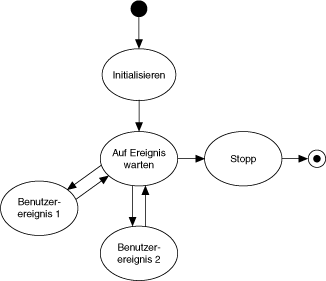
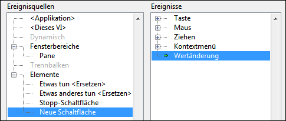
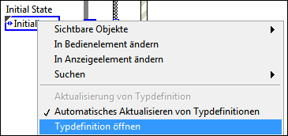
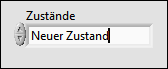
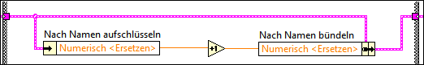
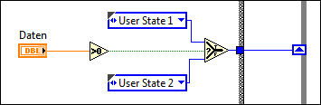
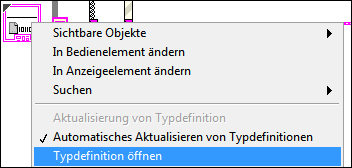
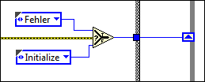

Einfacher Zustandsautomat
LabVIEW 2013
Mit der Vorlage für den einfachen Zustandsautomaten können Sie die Ausführungsreihenfolge von Programmcodeabschnitten definieren. Diese Art der Implementierung entspricht einem Moore-Automaten, bei dem der nächste Zustand basierend auf Entscheidungen im aktuellen Zustand bestimmt wird. Sie können dem Projekt problemlos weitere Codeabschnitte hinzufügen, Code entfernen oder die Ausführungsreihenfolge von Abschnitten ändern, ohne dabei die Struktur der Applikation gravierend zu beeinflussen.
Beispiel
Das Projekt "Messung mit bestimmter Sample-Anzahl" ist ein Beispiel dafür, wie Sie diese Vorlage für eine Messapplikation anpassen können. Öffnen Sie das Beispielprojekt über das Dialogfeld Projekt erstellen.
Anleitung für Entwickler
Auf ni.com erhalten Sie eine Anleitung für diese Vorlage.
Systemvoraussetzungen
LabVIEW Base, Full oder Professional Development System
Anwendungsfälle
Diese Vorlage eignet sich für Applikationen, die eine Kombination aus folgenden Komponenten darstellen:
- Zustände
- Entscheidungsalgorithmen, die den Wechsel zu einem bestimmten Zustand festlegen
Das Entwurfsmuster für Zustandsautomaten eignet sich beispielsweise für folgende Applikationen:
- Dialogfelder mit einer Seite oder mehreren Registerkarten. Jede Registerkarte des Dialogs entspricht einem Zustand. Der Benutzer initiiert die Zustandsübergänge durch Auswahl einer bestimmten Registerkarte. Jeder Zustand umfasst alle Arbeitsschritte, die vom Benutzer auf der jeweiligen Registerkarte ausgeführt werden können.
- Ein Bankautomat. Zustände einer solchen Applikation sind beispielsweise das Warten auf eine Benutzereingabe, das Vergleichen des gewünschten Geldbetrags mit dem Kontostand, die Geldausgabe, das Drucken eines Belegs usw.
- Eine Applikation, die Messungen durchführt, Daten protokolliert und dann auf die nächste Benutzereingabe wartet. Zustände einer solchen Applikation sind beispielsweise das Warten auf eine Benutzereingabe, die Durchführung der Messung, die Datenprotokollierung, die Datenanzeige usw.
Überblick

Hinweise:
- Jeder Zustand im abgebildeten Diagramm entspricht einem Unterdiagramm der Case-Struktur im Haupt-VI (Main.vi). Jeder Zustand:
- führt einen Arbeitsschritt aus
- informiert den Zustandsautomaten über den nächsten Zustand, indem eine Anweisung an ein Schieberegister der While-Schleife übergeben wird.
- Nach der Initialisierung geht der Zustandsautomat in den Zustand "Auf Ereignis warten" über. Dieser Zustand enthält eine Ereignisstruktur, die auf Änderungen des Frontpanels wartet. Wenn der Benutzer auf eine Schaltfläche klickt, erkennt LabVIEW das Ereignis und wechselt zum entsprechenden Unterdiagramm der Ereignisstruktur. Das Unterdiagramm initiiert dann einen Übergang zum nächsten Zustand.
- Jeder Zustand hat Zugriff auf einen Cluster aus Daten. Die Datentypen in diesem Cluster sind im Element Data.ctl definiert.
- Gültige Zustände sind in der Typdefinition State.ctl festgelegt. Durch die Verwendung einer Typdefinition für Zustandsübergänge werden mögliche Zustände eingeschränkt. Auf diese Weise kann verhindert werden, dass der Zustandsautomat einen nicht erkannten Zustand annimmt.
- Die Applikation kann nur mit dem Stoppzustand angehalten werden. Auf diese Weise wird ein unbeabsichtigtes oder unvollständiges Beenden verhindert, da
- der Programmcode zum Beenden nur ausgeführt wird, wenn der Benutzer die Applikation beenden möchte.
- der Programmcode zum Beenden immer vollständig ausgeführt wird.
- Es wird nur jeweils ein Zustand ausgeführt und mit einer einzigen While-Schleife wird erreicht, dass für alle Tasks dieselbe Ausführungsrate gilt. Wenn Sie verschiedene Raten oder parallele Tasks benötigen, sollten Sie die Vorlage "Handler für Nachrichten-Queues" oder "Akteur-Framework" in Erwägung ziehen. Sie können diese Vorlagen im Dialogfeld Projekt erstellen auswählen.
- Der Zustand “Auf Ereignis warten” ist der einzige Zustand, der Benutzereingaben erkennt. Um Benutzereingaben zu verarbeiten, muss sich der Zustandsautomat in diesem Zustand befinden.
Ausführen dieser Vorlage
- Starten Sie vom Projekt-Explorer aus das Haupt-VI "Main.vi".
- Klicken Sie auf die Frontpanel-Elemente, um verschiedene Dialoge anzuzeigen.
Bearbeiten der Vorlage
Bestimmen Ihrer Bedürfnisse
Bevor Sie diese Vorlage bearbeiten, stellen Sie sich folgende Fragen:
- Welche Zustände soll die Applikation enthalten? Die Antwort auf diese Frage bestimmt, welche Zustände Sie hinzufügen.
- Welcher Zustand soll welchem folgen? Die Antwort auf diese Frage bestimmt den Wert des Enum-Elements Next State (Nächster Zustand), den jeder Zustand an das Schieberegister der While-Schleife sendet.
Ein Zustand kann je nach Bedingung in andere Zustände übergehen. So hängt der nächste Zustand von "Wait for Event" in der Vorlage beispielsweise von der Eingabe des Benutzers ab.
- Auf welche Art von Daten muss jeder Zustand zugreifen? Die Antwort auf diese Frage bestimmt, welche Datentypen Sie dem Element "Data.ctl" hinzufügen.
- Welche Fehler könnten auftreten und wie sollte die Applikation darauf reagieren? Die Antwort auf diese Frage bestimmt den Umfang der erforderlichen Fehlerbehandlung.
Hinzufügen von Code für die Initialisierung
Zum Hinzufügen von Code für die Initialisierung Ihrer Applikation gehen Sie wie folgt vor:
- Wählen Sie den Case Initialize (Initialisieren) der Case-Struktur aus.
- Fügen Sie Programmcode in den Case ein, mit dem Ihre Applikation initialisiert wird. Beispiele sind das Öffnen einer Datei auf dem Datenträger für das Protokollieren von Daten, die Initialisierung von Werten des Elements Data.ctl usw.
- Legen Sie den nächsten Zustand der Appliaktion fest. Standardmäßig folgt dem Zustand "Initialize" (Initialisieren) der Zustand "Wait for Event" (Auf Ereignis warten):

Sie können diesen Code Ihren Bedürfnissen gemäß anpassen, so dass in einen anderen Zustand gewechselt wird.
Hinzufügen eines Elements zur Initiierung eines Zustandsübergangs
- Fügen Sie ein Element auf dem Frontpanel ein.
- Wählen Sie das Unterdiagramm "Wait for Event" (Auf Ereignis warten) der Case-Struktur aus.
- Fügen Sie der Ereignisstruktur einen Ereignis-Case hinzu.
- Konfigurieren Sie das Ereignis so, dass es ausgelöst wird, wenn sich der Wert der neuen Schaltfläche ändert. Zum Beispiel:

- Klicken Sie auf OK. LabVIEW erstellt ein Unterdiagramm in der Ereignisstruktur.
- Ziehen Sie den Blockdiagrammanschluss des neuen Elements in das Unterdiagramm.
- Legen Sie den nächsten Zustand basierend auf der Benutzereingabe fest und verbinden Sie ein Enum-Element mit dem Wert dieses Zustands mit dem Ausgangstunnel Next State:

Wenn es den Zustand noch nicht gibt, fügen Sie ihn hinzu.
Hinzufügen eines Zustands
Gehen Sie zum Hinzufügen eines Zustands wie folgt vor:
- Aktualisieren Sie "States.ctl", die Typdefinition mit den gültigen Zuständen:
- Wählen Sie ein States.ctl-Enum und öffnen Sie die Typdefinition:

LabVIEW zeigt daraufhin den Element-Editor an.
- Fügen Sie im Enum Zustände Platz für den neuen Zustand ein:
- Geben Sie den Namen des neuen Zustands ein. Zum Beispiel:

- Klicken Sie auf eine Stelle neben das Element, um den Namen der Liste mit Zuständen hinzuzufügen.
- Klicken Sie auf Datei»Änderungen übernehmen.
- Fügen Sie den Zustand zum Zustandsautomaten selbst hinzu:
- Fügen Sie der Case-Struktur im VI "Main.vi" ein Unterdiagramm hinzu:
- Fügen Sie Programmcode ein, der ausgeführt werden soll. Beachten Sie dabei folgende Richtlinien:
- Verwenden Sie für den Zugriff auf und die Bearbeitung von Zustandsdaten die Funktionen "Nach Namen aufschlüsseln" und "Nach Namen bündeln":

- Verbinden Sie die Fehleranschlüsse der Funktionen mit dem Fehlerschieberegister.
- Verbinden Sie eine FALSE-Konstante mit dem booleschen Ausgangstunnel. Die Schleife kann nur mit dem Stoppzustand angehalten werden.
- Jeder Zustand muss einen Übergang zu einem anderen Zustand festlegen. Verbinden Sie den Wert des nächsten Zustands mit dem Ausgangstunnel "Next State". Sie können diesen Anschluss direkt verbinden oder mit bedingter Logik arbeiten. Die folgende Abbildung zeigt ein Beispiel für eine solche Logik:

Wenn Daten größer als 0 ist, wird in User State 1 gewechselt. Anderenfalls ist User State 2 der nächste Zustand. Verwenden Sie für komplexere bedingte Logik eine Case-Struktur.
- Stellen Sie sicher, dass Ihre Applikation einen Übergang zum neuen Zustand enthält.
Bearbeiten der Datentypen, auf die Zustände zugreifen
Bearbeiten Sie die Datentypen, auf die Ihre Zustände Zugriff haben, wie folgt:
- Wählen Sie ein Data.ctl-Enum und öffnen Sie die Typdefinition:

LabVIEW zeigt daraufhin den Element-Editor an.
- Nehmen Sie die gewünschten Änderungen vor.
- Klicken Sie auf Datei»Änderungen übernehmen.
Hinzufügen von Programmcode zum Beenden
Fügen Sie Programmcode zum Beenden der Applikation in das Stop-Unterdiagramm der Case-Struktur ein. Da die Applikation nur mit diesem Unterdiagramm beendet werden kann, wird jeglicher Code in diesem Unterdiagramm garantiert vollständig ausgeführt. Auf diese Weise wird ein unbeabsichtigtes oder unvollständiges Beenden verhindert.
Mit dem Programmcode zum Beenden werden folgende Aufgaben ausgeführt:
- Freigabe von Arbeitsspeicher durch das Schließen von Referenzen
- Leeren von Puffern
- Senden von sicheren Werten an Eingangskanäle von Hardware
Hinzufügen von Funktionen zur Fehlerbehandlung
Standardmäßig wird die Applikation beendet, wenn eine Funktion am Anschluss Fehler (Ausgang) einen Fehler ausgibt. Bestimmte Fehler sollen ggf. ignoriert werden oder vielleicht möchten Sie fortgeschrittene Fehlerfunktionen einbauen. Gehen Sie zum Hinzufügen der Fehlerbehandlung wie folgt vor:
- Fügen Sie einen Fehlerzustand hinzu.
- Fügen Sie in diesen Zustand den gewünschten Code zur Fehlerbehandlung ein.
- Stellen Sie in allen anderen Zuständen sicher, dass bei einem Fehler in den Zustand "Fehler" gewechselt wird. Zum Beispiel:

Entfernen der Benutzeroberfläche
Wenn Ihre Applikation keine Benutzeroberfläche benötigt, können Sie diese wie folgt entfernen:
- Löschen Sie alle Frontpanel-Elemente.
- Löschen Sie das Unterdiagramm "Wait for Event" (Auf Ereignis warten) in der Case-Struktur in "Main.vi".
- Im vorigen Schritt wurde das Standard-Unterdiagramm entfernt. Dieses Diagramm wird ausgeführt, wenn der Case-Selektor auf ein unbekanntes Unterdiagramm verwiesen wird. Aus Gründen der Fehlerbehandlung müssen Sie ein anderes Unterdiagramm als Standard festlegen.
- Korrigieren Sie bei Bedarf fehlerhafte Verbindungen.
Sie können den Zustand Wait for Event (Auf Ereignis warten) auch vom Element State.ctl entfernen. Auf diese Weise stellen Sie sicher, dass Ihr Zustandsautomat nicht versucht, in den gerade gelöschten Zustand zu wechseln. Bevor Sie den Zustand löschen, notieren Sie alle Enums Ihrer Applikation, die diesen Zustand aufrufen. Nach dem Speichern von State.ctl, werden diese Enums geändert. Prüfen Sie den neuen Zustand.
Verwendete LabVIEW-Funktionen
Wichtige Informationen
Copyright
© 2013 National Instruments. Alle Rechte vorbehalten.
Gemäß den Bestimmungen des Urheberrechts darf diese Publikation ohne vorherige schriftliche Zustimmung der Firma National Instruments Corporation weder vollständig noch teilweise vervielfältigt oder verbreitet werden, gleich in welcher Form, ob elektronisch oder mechanisch. Das Verbot erfasst u. a. das Fotokopieren, das Aufzeichnen, das Speichern von Informationen in Informationsgewinnungssystemen sowie das Anfertigen von Übersetzungen gleich welcher Art.
National Instruments achtet das geistige Eigentum anderer und fordert seine Nutzer auf, dies ebenso zu tun. Die Software von National Instruments ist urheberrechtlich und durch andere Rechtsvorschriften zum Schutz geistigen Eigentums geschützt. Wenn Sie Software von National Instruments nutzen, um Software oder andere Materialien, die im Eigentum Dritter stehen, zu vervielfältigen, dürfen Sie Software von National Instruments nur insoweit nutzen, als Sie die betreffenden Materialien nach den jeweils anwendbaren Lizenzbestimmungen oder Rechtsvorschriften vervielfältigen dürfen.
Lizenzverträge von National Instruments und Rechtshinweise von Drittanbietern
Lizenzverträge (EULAs) von National Instruments und Rechtshinweise von Drittanbietern befinden sich in folgenden Verzeichnissen:
- Rechtshinweise: <National Instruments>\_Legal Information und <National Instruments>.
- EULAs: <National Instruments>\Shared\MDF\Legal\license
- Informationen zum Hinzufügen von Rechtshinweisen zu Installationsprogrammen, die mithilfe von NI-Produkten erzeugt werden: <National Instruments>\_Legal Information.txt
Marken
LabVIEW, National Instruments, NI, ni.com, das Firmenlogo von National Instruments und das Adlerlogo sind Marken von National Instruments Corporation. Weitere Marken von National Instruments finden Sie in der Trademark Information unter ni.com/trademarks.
Sonstige hierin erwähnte Produkt- und Firmenbezeichnungen sind Marken oder Handelsnamen der jeweiligen Unternehmen.
Patente
Nähere Informationen über den Patentschutz von Produkten/Technologien von National Instruments finden Sie unter Hilfe»Patente in Ihrer Software, in der Datei patents.txt auf Ihrem Datenträger oder unter National Instruments Patent Notice auf der Website ni.com/patents.